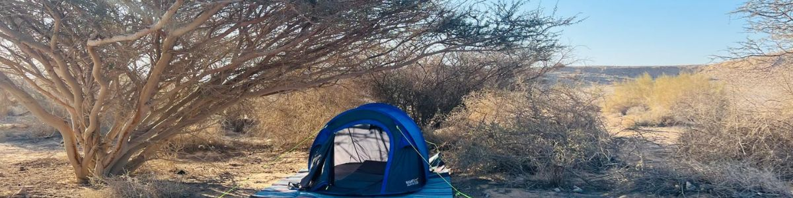

לינה בשטח - חינם וללא עלות
חניוני לילה במדבר יהודה
ריכזנו עבורכם את חניוני הלילה המומלצים והחינמיים ביותר באזור המרכז והדרום של מדבר יהודה, כולל ניווט מהיר לאופרוד.
מרכז
חניוני לילה במרכז מדבר יהודה
חניון לילה מצוקי דרגות
נווט באופרוד
חניון לילה חולד
נווט באופרוד
חניון לילה חבר
נווט באופרוד
חניון לילה נחל משמר תחתון
נווט באופרוד
חניון לילה נחל משמר עליון
נווט באופרוד
חניון לילה נחל צאלים תחתון
נווט באופרוד
דרום
חניוני לילה בדרום מדבר יהודה
חניון לילה ברכת צפירה
נווט באופרוד
חניון לילה מצדה מזרח
נווט באופרוד
חניון לילה הר קנאים
נווט באופרוד
חניון לילה תחתית נחל רחף
נווט באופרוד
חניון לילה מעלה יאיר
נווט באופרוד
חניון לילה צוק תמרור
נווט באופרוד